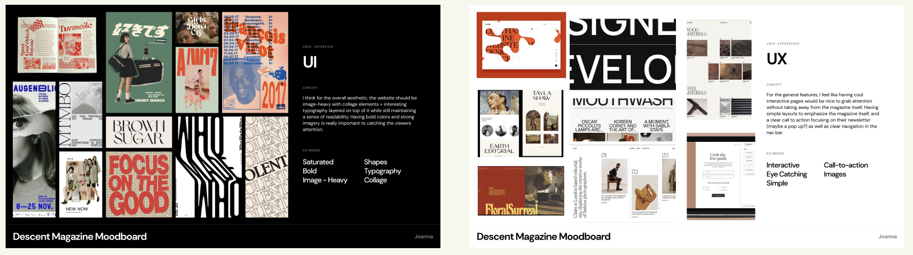
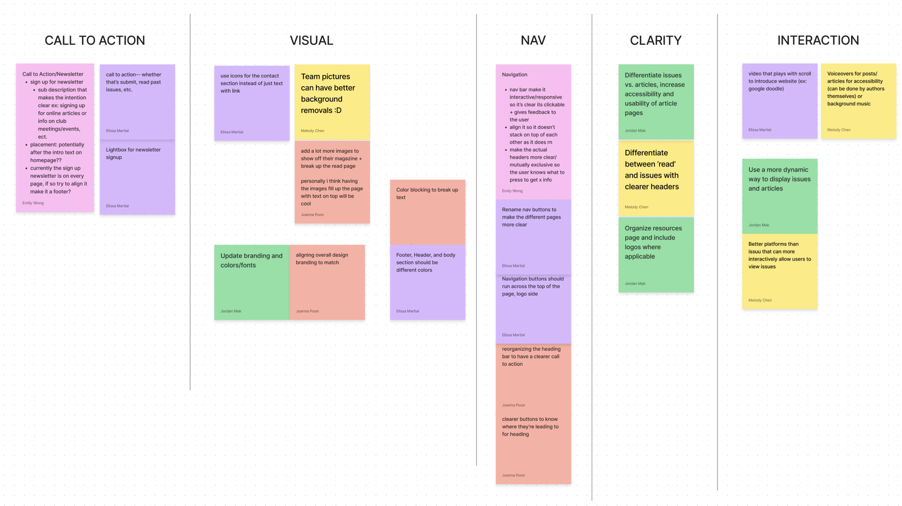
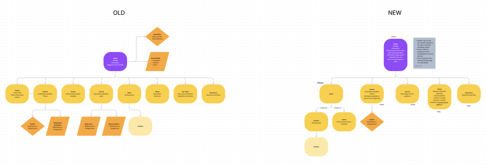
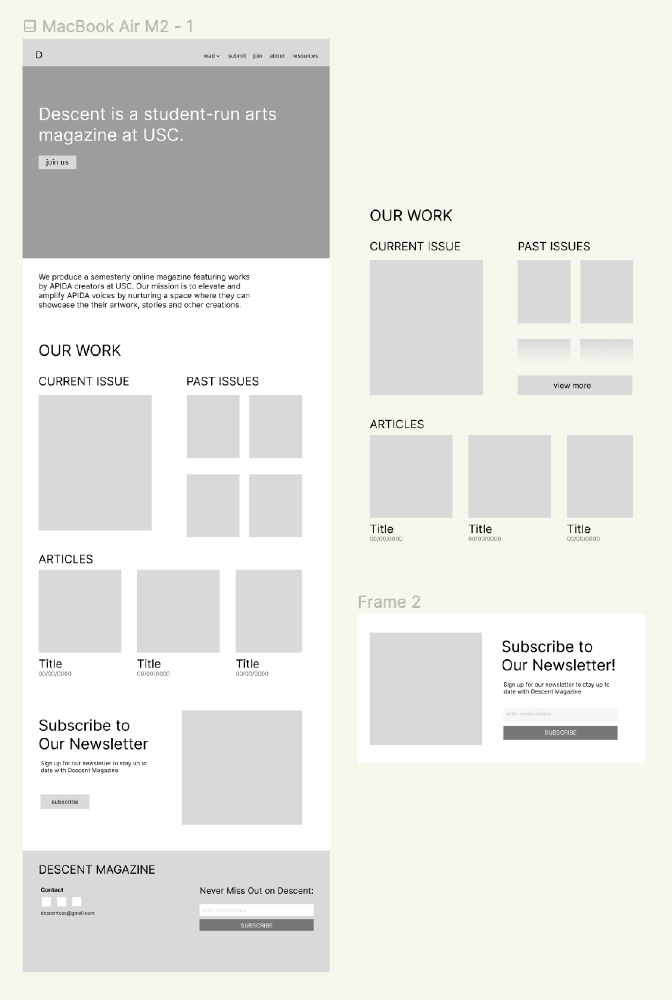
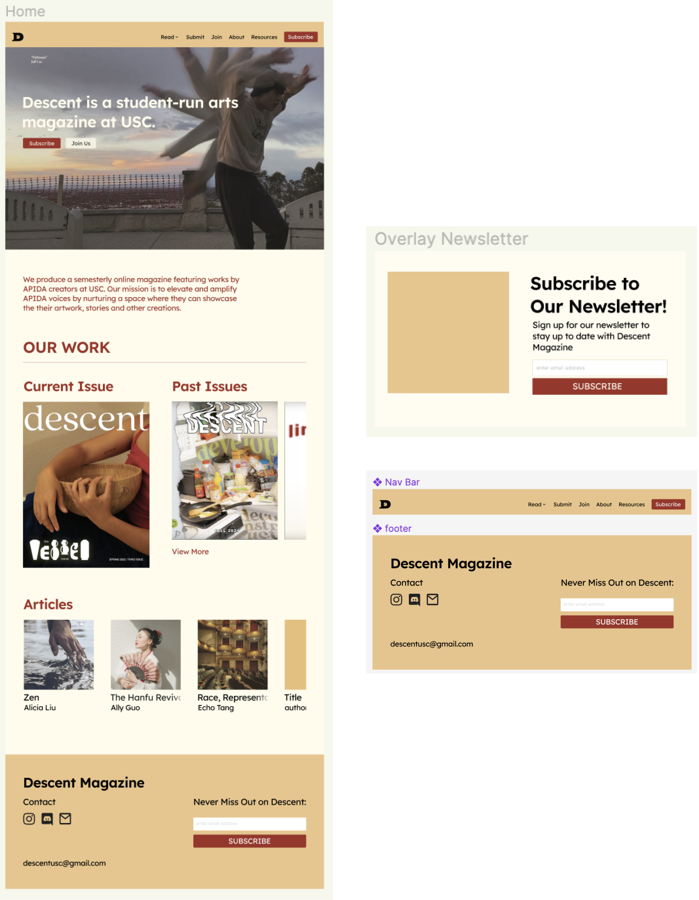
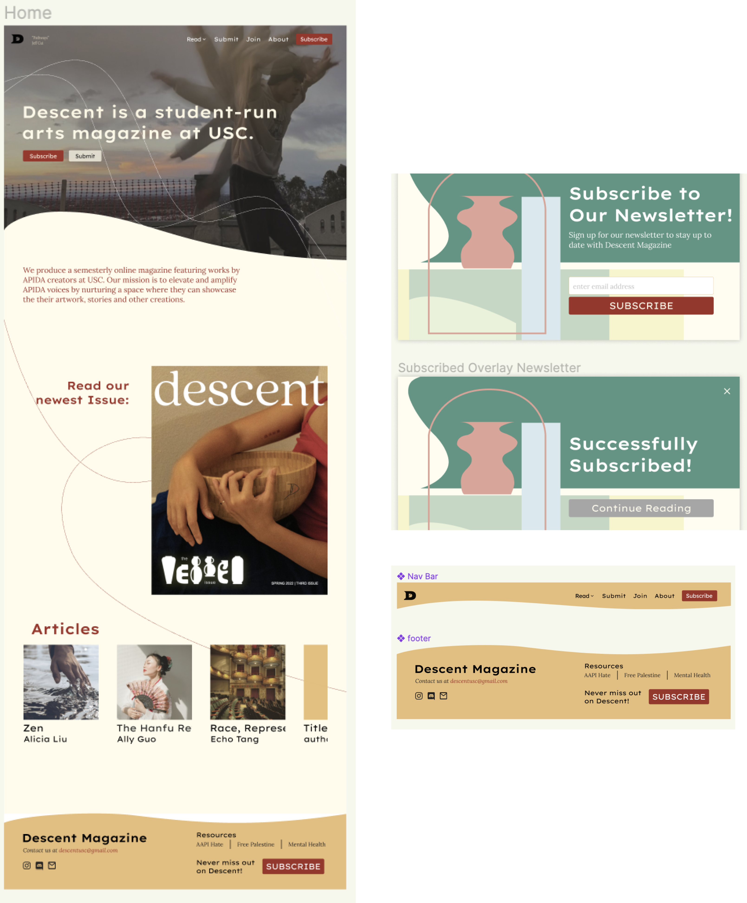

PROBLEM
Through the club Innovative Design at USC, I was given the task to
redesign their original website.
We had three main goals in mind while designing:
- Increasing engagement with a stronger user experience
- Match their magazine’s visual identity
- Increase subscriptions to their newsletter
Within the team, I was focused on the home page, newsletter pop-up,
header, and the footer.
I designed this website with a team of three designers with one team
lead through the club Innovative Design at USC. We were given the
task of redesigning their original website to increase engagement,
fit the magazine’s aesthetic visually, and have a better overall
experience design. They also wanted to increase subscriptions to
their newsletter. I focused on the home page design, the newsletter
pop-up, the header, and the footer. Throughout the entire process of
design, our team constantly edited based on Descent’s critiques as
well as critiques from the rest of the team.
PROCESS
We started off by moodboarding, both for UX and UI.
We focused on the functionalities / user experiences that would have
been interesting to see in this website as well as the visual design
that would have fit Descent Magazine’s image. This helped us
consolidate our ideas on how to proceed in the future with the
overall visual and experience design for the website.

We then brainstormed how we wanted the site to differ from the
initial site.
We all wrote down some issues we saw with the initial user
experience in the past site through sticky notes in FigJam. We
then sorted them into 5 main categories: call to action, visual,
nav, clarity, and interaction. Through this type of brainstorming,
we were able to formulate a better idea of how to proceed with the
design and the pain points we needed to hit.

Finally, we create a site map to plan out the redesigned website
based on our previous brainstorming.
The main difference is that the site map is a lot more
consolidated in terms of buttons that they can press; for example,
we combined the articles and issues under one tab that’s just
called “read”. Overall, we decluttered a lot of pages, making a
cleaner user experience.

After brainstorming, we started designing the low-fidelities.
We started off by designing the low fidelity wireframes, where we
ensured that the user interactions were thought through and that
our initial ideas were visualized.

And from there, the mid fidelities.
We moved onto mid-fidelity designs, where we experimented more
with colors, images, and other design elements.

And finally, high fidelities.
Through hi-fis, we were able to add design elements that pushed
the visual design closer to the visual branding of Descent
Magazine, adding fun lines and shapes to add visual interest to
the website.

Check in with your team.
Getting feedback from my team was vital. When designing, its very
easy to get caught up in the small things and making things
“perfect”, but once another designer sets their eyes on your work,
the process feels a lot simpler and easier to tackle. Being able
to work with fellow designers made the process smooth and
efficient, and it’s a resource to keep in mind for future
projects.
Communicate with your client!
In the end, the design is meant for the client. Even if their
vision isn’t my vision, it’s my job to bring their vision to life.
Within client work, it’s important to constantly check in with the
client’s opinion and see that their needs are met.